Free
powerpoint
Tutorials
|
Free
powerpoint
Tutorials
|
|
 home home |
Stay at Home and Learn | ||||
Working with the PowerPoint Datasheet |
|||||
|
Charts 1, 2, 3, 4, 5, 6, 7, 8, 9, 10, 11, 12 Flow Charts Tables
Once you've added the title to the chart template, do what the slide says and "Double click to add chart":
When you do, PowerPoint will enter a default chart with some default data. The chart itself will look like this: 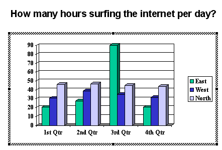 But you should also see something called the Datasheet. This: 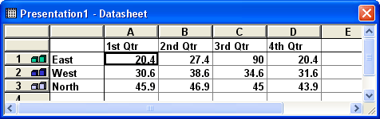 (If you can't see the Datasheet, click View from the PowerPoint menu bar. From the View menu, select Datasheet.) The Datasheet is where you type the information that will be going in to your chart. Notice the black rectangle in the image above. This means that cell A1 is selected. The value is 20.4. Compare the chart itself with the Datasheet. The East bars are green, the West bars are dark blue, and the North bars are light blue. If you've never done anything with Charts before, it may help to details the various areas. You're going to be doing a lot of Chart formatting soon, so it's worth getting to know them. In the Datasheet, you'll notice that the first Row says "1st Qtr, 2nd Qtr, 3rd Qtr, 4th Qtr". These headings will be going on to the chart, across the bottom, in the area know as the Category X Axis. The words East, West and North on the Datasheet will be going into the area of the chart known as the Series Legend. Here's a new image of the chart, with these areas highlighted: 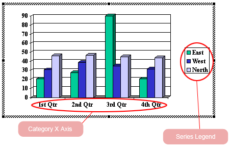 Let's add some data for our own chart. We'll do the Category X Axis and the Series Legend.
Adding and Deleting Chart DataThe first thing to do is to get rid of Rows 2 and 3 in the Datasheet, because we don't need them. To do this, click on the number 2 on the left-hand side, and hold down your left mouse button. Keep it held down and drag to the number 3. This should highlight Row 2 and 3 on the Datasheet: 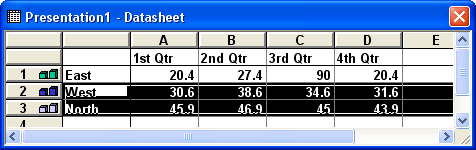 If you've done it correctly, you should see the black highlighted areas running across to the E column and beyond, as in the image above. If you've just highlighted the data, it will stop at the D column, as in this image: 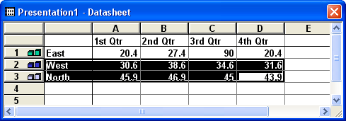 We're trying to delete Rows 2 and 3, and not just the data in them. So your highlighted area shouldn't look like the image above, but the previous Datasheet image. Get rid of Rows 2 and 3 by hitting the Delete key on your keyboard. You should then have just the top Row: 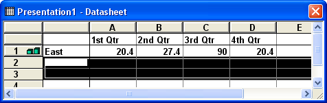 Change the Series Legend by clicking on the word East. When you see the black rectangle surrounding East, start typing: 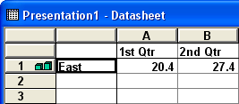 Type the word Hours. Then press the Enter key on your keyboard: 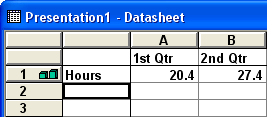 If you look at your Chart, you should see that the Series Legend has changed: We can now change the Category X Axis. Still on the Datasheet, click on the cell where it says 1st Qtr. Now type the following: Staff taking calls Hit the Enter key on your keyboard. Your Datasheet will then look like this: 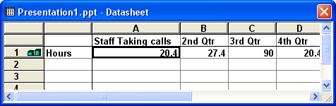 You can widen the Columns of your Datasheet by moving your mouse on the line between each column. Your mouse pointer will change shape. When it does, hold down the left mouse button and drag: 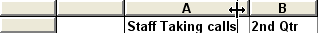 Notice your chart, though, when you have changed the heading. Your Category X Axis should look like this: 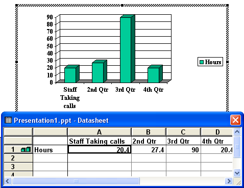 Do the same with the other three headings. Enter the following: B Column Heading Supervisors When you're done, it should look like this one: 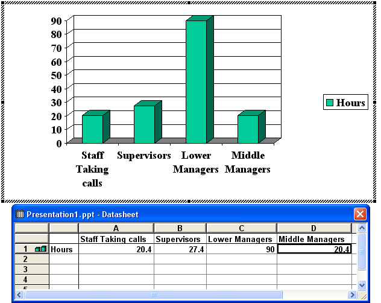
The only thing left to do on the Datasheet is enter some numbers. Enter the following numbers on the Datasheets: Staff Taking Calls 0.37 When you're done, the Datasheet should look like this: 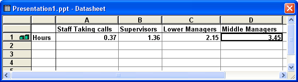 And the chart itself will look like this:
Your chart is already coming along! As you can see, though, the text on the Category X Axis is too big, and is continuing on to a new line. We'll correct that in the next part.
|
||||